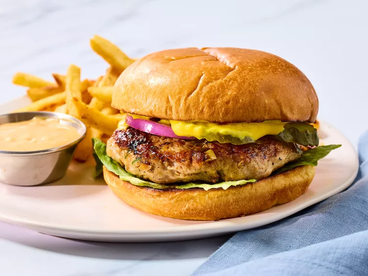

Return Home
Turkey Burgers Recipe

Description
Full of flavor — any cooking method may be used, and they freeze very well. The recipe can also be used for meatballs or meatloaves
Ingredients
- 3 pounds ground turkey
- ¼ cup seasoned bread crumbs
- ¼ cup finely diced onion
- 2 egg whites, lightly beaten
- ¼ cup chopped fresh parsley
- 1 clove garlic, peeled and minced
- 1 teaspoon salt
- ¼ teaspoonm ground black pepper
Steps
- Gather all ingredients
- Mix ground turkey, seasoned bread crumbs, onion, egg whites, parsley, garlic, salt, and pepper together in a large bowl
- Form into 12 patties
- Cook the patties in a medium pan over medium heat, turning once, to an internal temperature of 85°C degrees (180°F)
- Serve hot and enjoy!